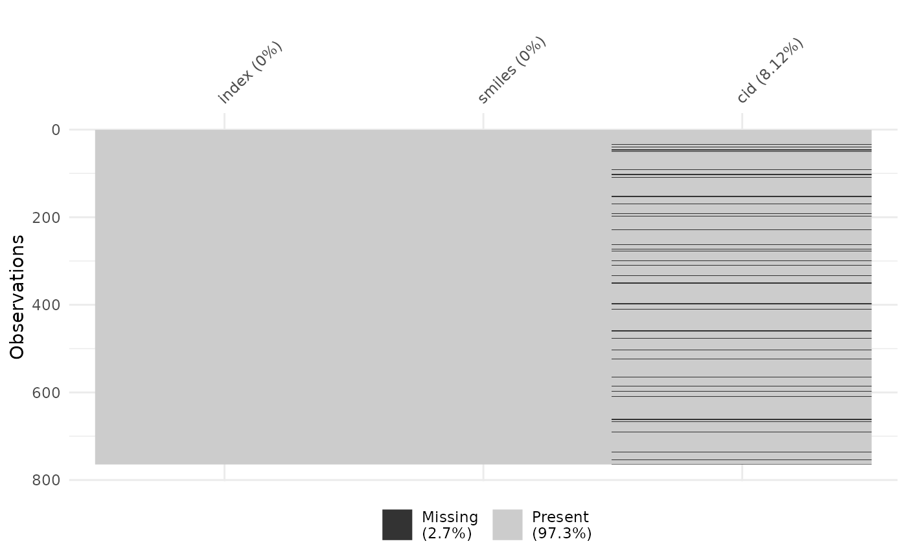

Retrieve PubChem cid and synonyms for each ASPIS compound
Marc A.T. Teunis, Ph.D.
2022-03-20 13:52:42
aspis-chemcicals-cid-synonyms.RmdIntroduction
This workflow describes how to retrieve information (here PubChem cid and synonyms) for a given compound inchi, using the NCBI Entrez PUG-REST API. This vignette was also used to create these datsets in the {raspis} package:
- merged_source_cid_synonyms
- merged_source_cid_synonyms_tidy
- smiles_cid
- smiles_cid_synonyms
- smiles_cid_synonyms_tidy
- smiles_cid_tidy
- data_source
See ?raspis::dataset_name for more info
List of chemicals
Here we load the Googlesheet file containing compound info from the ASPIS project cluster for which we will build the query and perform the search. People who have access to the file and have the url to the file, can reproduce the results obtained in this demo.
see for workflow on how to use R to connect to Googlesheets: https://www.r-bloggers.com/2021/12/how-to-connect-r-to-google-sheets-using-googlesheets4/
To initiate the authentication for your Google account run gs4_auth() in the Console. You are presented with the option to select an eaxisting google account or to add a new one. You may choose to link the current session to an already cached token (press enter after selecting the apporpriate Google account), or choose ‘0’ to obtain a new token.
The Googlesheet we are trying to access here is in ‘everybody who has the link has access’ mode. So we do not need to authenticate. We can use gs4_deauth() here, which in this case is safer to use.
The url to the sheet is stored as a cached value, to not show it here in the code. We use the RStudio API to achieve this.
data_source <- read_sheet(url_sheet)
data_source## # A tibble: 790 × 12
## `Compound Name` IUPAC Inchi SMILES `CAS Number` DTXSID `Project ID (R…`
## <chr> <chr> <chr> <chr> <list> <chr> <chr>
## 1 diclofenac 2-[2… InCh… O=C(O… <chr [1]> DTXSI… RH0000
## 2 midazolam 8-ch… InCh… Cc1nc… <chr [1]> DTXSI… RH0001
## 3 tolbutamide 1-bu… InCh… CCCCN… <chr [1]> DTXSI… RH0003
## 4 haloperidol 4-[4… InCh… O=C(C… <chr [1]> DTXSI… RH0004
## 5 cyclosporine A (3S,… InCh… C/C=C… <chr [1]> DTXSI… RH0005
## 6 propanolol 1-na… InCh… CC(C)… <chr [1]> DTXSI… RH0006
## 7 1,2-Benzisothiazolin… 1,2-… InCh… O=c1[… <chr [1]> DTXSI… RH0007
## 8 1,4‐Phenylenediamine 2,6-… InCh… Nc1cc… <chr [1]> DTXSI… RH0008
## 9 2,5-Diaminotoluene s… 2-me… InCh… OS(O)… <chr [1]> DTXSI… RH0009
## 10 2‑Methylisothiazolin… 2-me… InCh… Cn1sc… <chr [1]> DTXSI… RH0010
## # … with 780 more rows, and 5 more variables: `Project ID (ONTOX)` <chr>,
## # `Project ID (PrecisionTox)` <lgl>, `Used in RISK-HUNT3R` <lgl>,
## # `Used in ONTOX` <lgl>, `Used in PrecisionTox` <lgl>
#usethis::use_data(data_source)Clean and select data
Let’s clean up and reduce the amount of data. Steps to take:
- Clean up variable names to make them unix-safe
- The file is not tidy, the columns “Project ID (RISK-HUNT3R)”, “Project ID (ONTOX)”, “Project ID (PrecisionTox)”, “Used in RISK-HUNT3R”, “Used in ONTOX”, “Used in PrecisionTox” contain variables (
project_id&used_in_project), that are spread over multiple columns. Here we will tidy them into 2 columns:project_idandused_in_project, using theunite()function from the tidyr package.
data_source <- janitor::clean_names(data_source)
names(data_source)## [1] "compound_name" "iupac"
## [3] "inchi" "smiles"
## [5] "cas_number" "dtxsid"
## [7] "project_id_risk_hunt3r" "project_id_ontox"
## [9] "project_id_precision_tox" "used_in_risk_hunt3r"
## [11] "used_in_ontox" "used_in_precision_tox"
data_source |>
mutate(
project_id_risk_hunt3r = ifelse(
is.na(project_id_risk_hunt3r),
"",
project_id_risk_hunt3r)
) |>
mutate(
project_id_ontox = ifelse(
is.na(project_id_ontox),
"",
project_id_ontox)
) |>
mutate(
project_id_precision_tox = ifelse(
is.na(project_id_precision_tox),
"",
project_id_precision_tox)
) |>
tidyr::unite(
col = "project_id",
project_id_risk_hunt3r: project_id_precision_tox,
sep = "<>" ## add a token to be able to recognize the ids per project
) |>
tidyr::unite(
col = "used_in_project",
used_in_risk_hunt3r:used_in_precision_tox,
sep = "<>" ## add a token to be able to recognize the values per project
) -> data_source_tidySome checks on duplicates
data_source_tidy |>
group_by(smiles) |>
tally() |>
dplyr::filter(n > 1) -> aspis_duplicated_smiles
aspis_duplicated_smiles## # A tibble: 26 × 2
## smiles n
## <chr> <int>
## 1 "C(CN)C(O)(P(=O)(O)O)P(=O)(O)O" 2
## 2 "C(CO)O" 2
## 3 "C[C@@H]1[C@H]2[C@@H]([C@H]3[C@@H](C(=O)C(=C([C@]3(C(=O)C2=C(C4=C1C=CC… 2
## 4 "C[C@@H]1C[C@@H]([C@@H]2[C@H](C[C@H]([C@@](O2)(C(=O)C(=O)N3CCCC[C@H]3C… 2
## 5 "C[C@@H]1C[C@H]2[C@@H]3CCC4=CC(=O)C=C[C@@]4([C@]3([C@H](C[C@@]2([C@]1(… 2
## 6 "C[C@H](CS)C(=O)N1CCC[C@H]1C(=O)O" 2
## 7 "C=CC(=O)N" 2
## 8 "C1=CC=C(C=C1)C2=CC(=O)C3=C(O2)C=CC4=CC=CC=C43" 2
## 9 "C1C2=CN=C(N2C3=C(C=C(C=C3)Cl)C(=N1)C4=CC=CC=C4F)CO[C@H]5[C@@H]([C@H](… 2
## 10 "C1CCC(C1)(C(=O)O)N" 2
## # … with 16 more rows
#usethis::use_data(aspis_duplicated_smiles)So there are 26 rows that have the same value for inchi.
Can we see which chemicals are selected in two or more projects
We know from inspecting the data that the value “RH0106<>CMS-7713<>” in the project_id indicates that this compound is selected in both RISKHUNT3R and ONTOX. Let’s see which inchi belongs to this compound.
data_source_tidy |>
dplyr::filter(
project_id == "RH0106<>CMS-7713<>"
) -> x
x$smiles## [1] "C[C@@H]1[C@H]2[C@@H]([C@H]3[C@@H](C(=O)C(=C([C@]3(C(=O)C2=C(C4=C1C=CC=C4O)O)O)O)C(=O)N)N(C)C)O"Is this one of the duplicates?
aspis_duplicated_smiles |>
dplyr::filter(
smiles == x$smiles
)## # A tibble: 1 × 2
## smiles n
## <chr> <int>
## 1 C[C@@H]1[C@H]2[C@@H]([C@H]3[C@@H](C(=O)C(=C([C@]3(C(=O)C2=C(C4=C1C=CC=C… 2????
Add CID
To start with a clean query to PubChem, I will continue with only the unique inchi values for each compound in the ASPIS chemical set.
data_source_tidy$smiles |>
unique() |>
enframe(name = "index", value = "smiles") -> smiles_unique
smiles_unique## # A tibble: 764 × 2
## index smiles
## <int> <chr>
## 1 1 O=C(O)Cc1ccccc1Nc1c(Cl)cccc1Cl
## 2 2 Cc1ncc2n1-c1ccc(Cl)cc1C(c1ccccc1F)=NC2
## 3 3 CCCCNC(=O)NS(=O)(=O)c1ccc(C)cc1
## 4 4 O=C(CCCN1CCC(O)(c2ccc(Cl)cc2)CC1)c1ccc(F)cc1
## 5 5 C/C=C/C[C@@H](C)[C@@H](O)[C@H]1C(=O)N[C@@H](CC)C(=O)N(C)CC(=O)N(C)[C@@…
## 6 6 CC(C)NCC(O)COc1cccc2ccccc12
## 7 7 O=c1[nH]sc2ccccc12
## 8 8 Nc1ccc(N)cc1
## 9 9 OS(O)(=O)=O.Cc1cc(N)ccc1N
## 10 10 Cn1sccc1=O
## # … with 754 more rowsCID is the PubChem id. We need this id for other things.
## get all CID for all chemicals by name
## wrap get_cid() in function with a pause, not to overburden the NCBI server.
get_cid_with_pause <- function(..., wait = 0.5){
x <- get_cid(...)
profvis::pause(wait)
return(x)
}
hold = 2
smiles_cid <- smiles_unique |>
mutate(
cid = map(
.x = smiles,
get_cid_with_pause,
verbose = TRUE,
from = 'smiles',
wait = hold)
)
#usethis::use_data(smiles_cid)
smiles_cid_tidy <- smiles_cid |>
unnest(cid) %>%
dplyr::select(-query)
## store dataset in package
#usethis::use_data(smiles_cid_tidy, overwrite = TRUE)Check cid for missingness and uniqueness
## load datset from package
data(package = "raspis", "smiles_cid_tidy")
## are there inchi values that did not match to any CID?
smiles_cid_tidy$cid |>
is.na() |>
sum()## [1] 62
naniar::vis_miss(smiles_cid_tidy)
## is every cid matched to a unique cid?
smiles_cid_tidy |>
group_by(smiles) |>
tally() |>
dplyr::filter(n >1) -> x
x$n## integer(0)From the code above we can conclude that:
- There are missing cid. This means that for values of
inchia matching cid was not returned from the PubChem database. What this means for the project, remains to be seen. - Each value for
cidhas a matching unique value forsmiles. This is to be expected as cid and smiles are both resolvable ids.
Enrich compound data with synonyms
No we add synonyms to each row that we have a cid for. To reduce the number of queries, we use only the complete records (that have an inchi and a cid). See PUG-REST API PubChem for all attributes that can be retrieved.
get_synonyms_with_pause <- function(..., wait = 0.5){
x <- pc_synonyms(...)
profvis::pause(wait)
return(x)
}
hold = 2
smiles_cid_synonyms <- smiles_cid_tidy |>
na.omit() |>
mutate(
synonyms = map(
cid,
get_synonyms_with_pause,
from = "cid",
wait = hold,
verbose = TRUE))
#usethis::use_data(smiles_cid_synonyms)
smiles_cid_synonyms_tidy <- smiles_cid_synonyms |>
unnest_longer(synonyms) |>
unnest_longer(synonyms)
## write as dataset to package
#usethis::use_data(smiles_cid_synonyms_tidy)Result
smiles_cid_synonyms_tidy |> head(5)## # A tibble: 5 × 5
## index smiles cid synonyms synonyms_id
## <int> <chr> <chr> <chr> <chr>
## 1 1 O=C(O)Cc1ccccc1Nc1c(Cl)cccc1Cl 3033 diclofenac 3033
## 2 1 O=C(O)Cc1ccccc1Nc1c(Cl)cccc1Cl 3033 15307-86-5 3033
## 3 1 O=C(O)Cc1ccccc1Nc1c(Cl)cccc1Cl 3033 Diclofenac acid 3033
## 4 1 O=C(O)Cc1ccccc1Nc1c(Cl)cccc1Cl 3033 dichlofenac 3033
## 5 1 O=C(O)Cc1ccccc1Nc1c(Cl)cccc1Cl 3033 Voltaren 3033